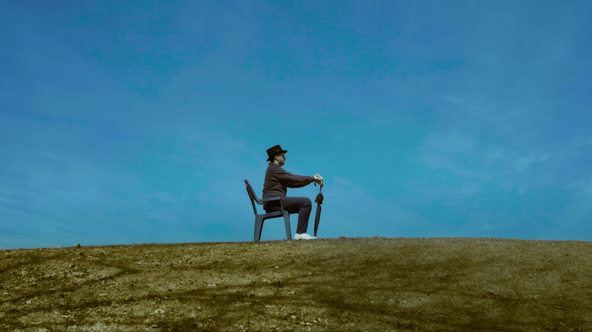
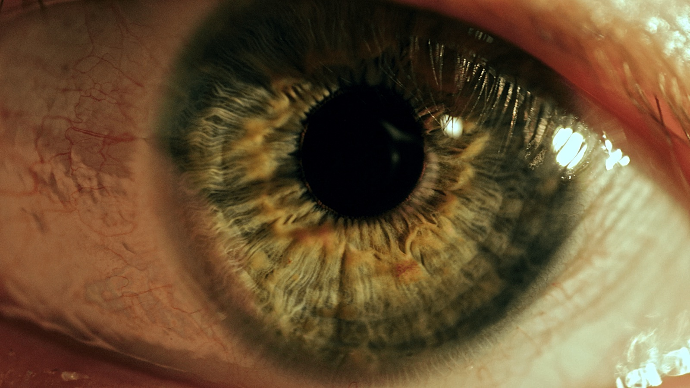
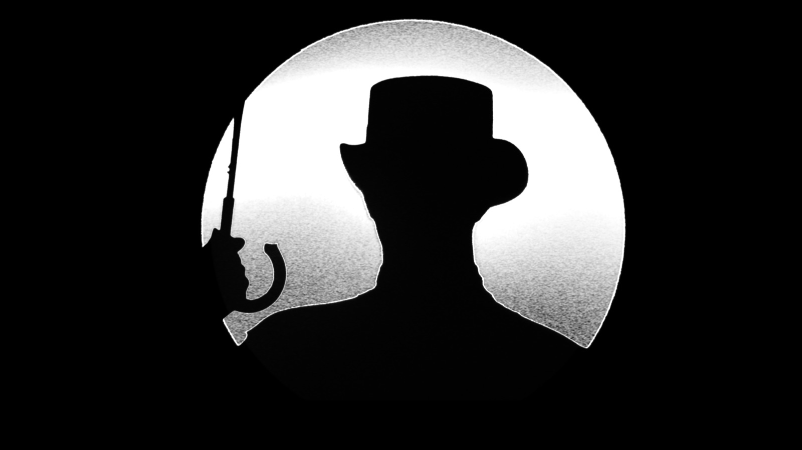
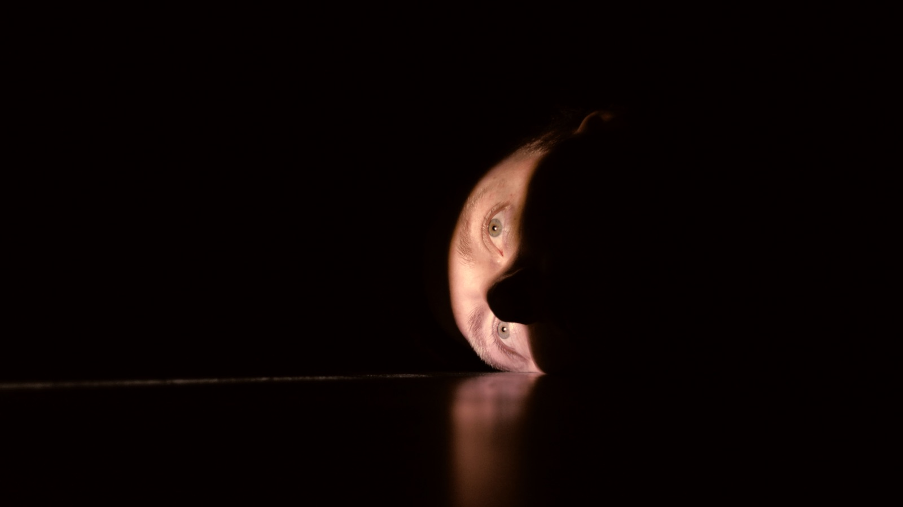

(Synopsis)
Trois mondes, un parapluie
Le parcours du personnage, du parc jusqu'au retour à la réalité.
-
Seul sur une chaise
Le personnage est assis seul dans un parc, le regard perdu à l'horizon. Il se lève, prend son parapluie, et du haut de la colline on découvre plusieurs chaises vides.

-
Désirs et démons
Des couleurs chaudes et vibrantes évoquent ses désirs et ses peurs. Des papillons dansent, des distorsions visuelles et sonores troublent le calme, puis ses démons apparaissent en lasers et en ombres menaçantes. Les couleurs passent du bleu au rouge, puis au noir et blanc.


-
Le calme en noir et blanc
Il chute dans un monde en noir et blanc où règne la tranquillité. Il y trouve un moment de paix, avant de retourner à la réalité, parapluie fermé, marchant lentement vers l'inconnu.


-
Spatialisé sur huit haut-parleurs
J'ai composé la trame sonore dans FL Studio et je l'ai spatialisée en surround sur huit haut-parleurs avec Spat Revolution. Voici la version binaurale, à écouter au casque.
Bande sonore binaurale (au casque)